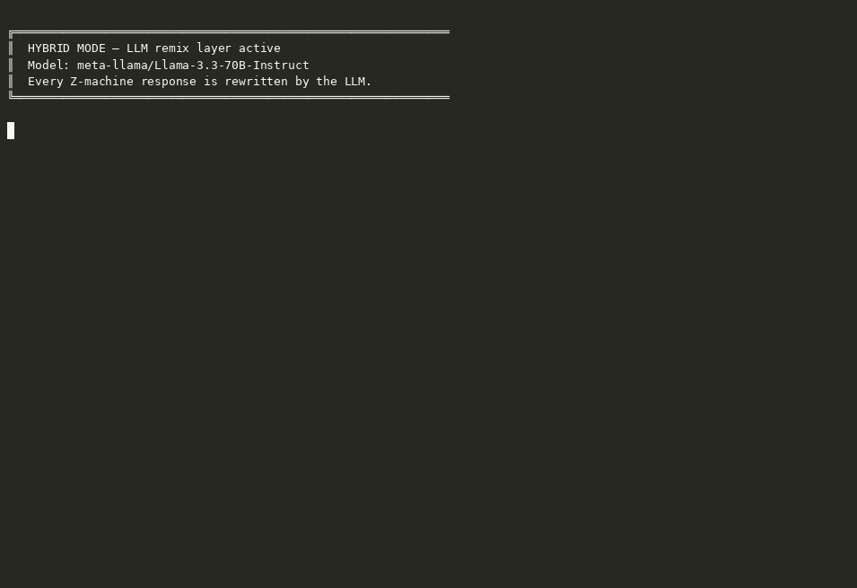
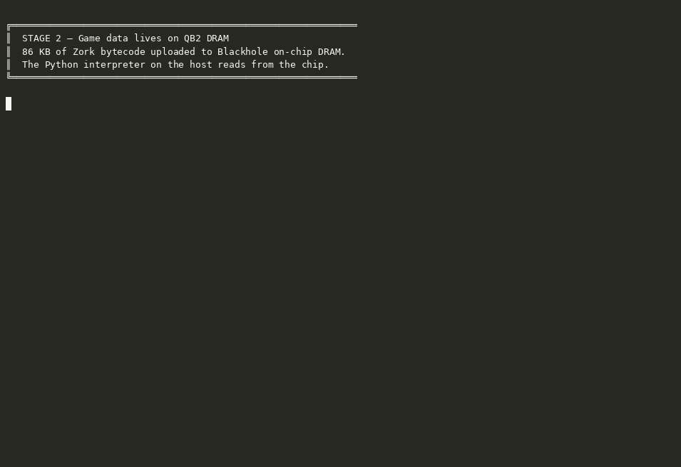
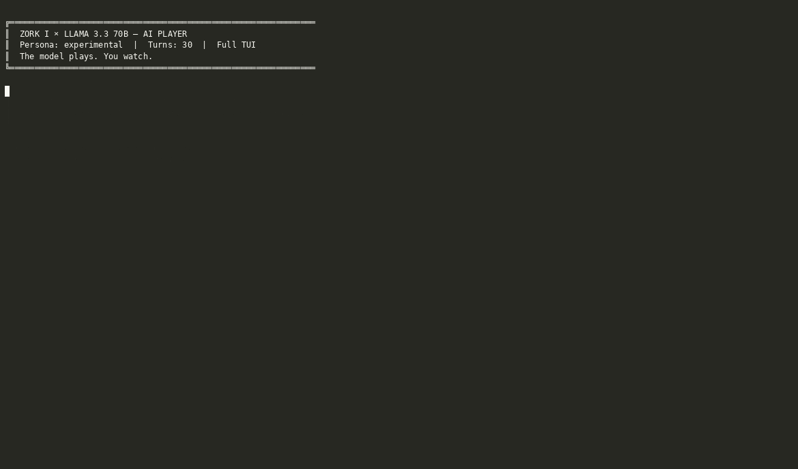

TT-Zork & More — Documentation
Running a 1977 stack-based virtual machine on 2026 AI accelerator hardware — three hardware stages, an LLM remix layer, and a full terminal UI.
All demos use the --stage sim Python interpreter. The LLM remix layer
and AI auto-play connect to Llama-3.3-70B running on Tensix cores via
tt-inference-server.

Hybrid — human plays, Llama-3.3-70B rewrites every Z-machine response

Stage 2 — game binary on Blackhole DRAM

AI auto-play — experimental persona, 30 turns, full TUI (first 60s)
→ Full interactive demo page with embedded asciinema players for all seven recordings including Zork II.
Zork was written in 1977–1979 by Marc Blank, Dave Lebling, Bruce Daniels, and Tim Anderson at MIT, originally in MDL on a PDP-10. Infocom commercialised it in 1980. To ship the game across the fragmented microcomputer market of the era, Infocom designed the Z-machine: a simple stack-based virtual machine whose bytecode could be compiled once and interpreted on any platform they supported — CP/M, Apple II, TRS-80, Commodore 64, and dozens more. The interpreter was small enough to write in a few kilobytes of assembly for each target. The Z-machine specification, released publicly after Infocom was acquired by Activision, later inspired Graham Nelson's Inform language and remains the format for a large archive of interactive fiction.
Tenstorrent builds AI accelerators whose chips contain two distinct kinds of
processing elements. The Tensix cores handle tensor operations — matrix
multiplications, the inner loop of transformer inference. Each Tensix block is managed by a
cluster of small embedded RISC-V cores that handle data movement, instruction
dispatch, and coordination. These management cores are fully programmable; TT-Metal and TT-Lang
expose them as general-purpose compute targets through the ttnn API.
This project runs the Z-machine on those three levels of the Tenstorrent stack:
| Stage | Where the game runs |
|---|---|
| 1 — sim | Python Z-machine interpreter on the host CPU |
| 2 — device | Same interpreter; game binary resides on Blackhole DRAM |
| 3 — risc-v | Z-machine interpreter kernel running on Blackhole RISC-V cores |
| +remix | LLM response layer served by tt-inference-server on Tensix |
# Activate the TT-Lang pyenv (required for stages 2 and 3)
source ~/code/tt-lang/build/env/activate
# Interactive startup menu (game + stage + remix selection)
python play.py
# Stage 1 — pure Python, no hardware needed
python play.py --stage sim
# Stage 2 — game binary on Blackhole DRAM
python play.py --stage device
# Stage 3 — interpreter on RISC-V cores
python play.py --stage risc-v
# Any stage with the LLM remix layer
python play.py --stage sim --remix
# LLM persona auto-play (the LLM plays; you watch)
python play.py --stage sim --persona expert --turns 40
# Full terminal UI (hardware monitor, streaming tokens, ASCII art)
python play.py --stage device --remix --tui
Run with no arguments to get an interactive startup menu that lets you choose the game file,
stage, and remix mode. Pass --stage and --game together to skip
the menu. Use --menu to force the menu even when other flags are present.
Available game files in game/: zork1.z3, zork2.z3,
zork3.z3, advent.z5. Use --game to point at any
Z-machine story file.
--stage sim)
engines/sim.py wraps ttlang/zmachine_v3.py, a complete Python
implementation of the Z-machine V3 specification. No hardware is required. The interpreter
runs the game's bytecode locally, handling all opcodes, the object tree, the dictionary,
Z-string abbreviation decoding, and the READ/PRINT I/O loop.
--stage device)
engines/device.py opens a Tenstorrent Blackhole device via ttnn,
uploads the 87 KB game binary to on-chip DRAM as a ttnn.Tensor, verifies the
round-trip (first 8 header bytes), and records the physical DRAM address. The Python
Z-machine interpreter then runs against those DRAM-resident bytes on the host. The game data
lives on silicon; the interpreter logic runs on the host CPU. This validates the data path
that Stage 3 reuses.
Requires: /dev/tenstorrent present, TT-Lang pyenv active.
--stage risc-v)
engines/riscv.py dispatches kernels/zork_interpreter_l1.cpp to
Blackhole RISC-V cores via ttnn.generic_op. The kernel implements the Z-machine
interpreter in C++: it reads game bytecode from DRAM via the on-chip NoC, executes
instructions, decodes Z-strings, and writes output back to DRAM. The Python host reads the
result after each batch.
Current constraints: The Blackhole chip firmware limits each kernel
invocation to approximately 10 Z-machine instructions before the execution watchdog fires.
A third generic_op call within a single device session hangs reliably
(diagnosed in ttlang/diag_batch3.py); the workaround is opening and closing
the device for each batch. State does not persist across step() calls — each
command restarts the interpreter from the initial PC. These are firmware execution budget
constraints, not architecture limitations.
Requires: Blackhole hardware (p300c card or equivalent), TT-Lang pyenv active,
kernels/zork_interpreter_l1.cpp built.
--remix)An LLM layer that intercepts each game response and rewrites it in a more expansive voice, generates ASCII art for room entries, and collects postcard-style narrative snapshots at notable moments. It does not alter game state — the Z-machine response is the source of truth; the LLM changes the prose, not the facts.
The layer connects to an OpenAI-compatible endpoint (default:
http://localhost:8000/v1/chat/completions, typically a tt-inference-server
instance running LLaMA on Tensix). Override with ZORK_LLM_URL. Override the
model with --model or ZORK_LLM_MODEL.
| Task | Default model |
|---|---|
| Input mapping (freeform → Zork command) | Llama-3.2-1B |
| Persona command selection (auto-play) | Llama-3.2-1B |
| Output remix, ASCII art, postcards | Llama-3.1-8B |
The remix layer degrades gracefully — if the LLM server is unreachable, raw Z-machine output is shown unchanged.
--tui)python play.py --stage device --remix --tuiA Textual-based full-terminal interface with:
HARDWARE (live tt-smi telemetry),
THINKING (streaming LLM tokens with vocabulary-aware colour highlighting),
ART (ASCII room art)Slash commands available in the TUI:
| Command | Effect |
|---|---|
/remix | Enable LLM remix layer |
/classic | Disable LLM remix layer |
/auto [persona] | Start LLM auto-play with named persona |
/stop | Stop auto-play, return to manual |
/help | Show command list |
/quit | Exit |
--persona)python play.py --stage sim --persona expert --turns 50
python play.py --stage sim --persona naive --remixThe LLM plays the game. On each turn, the current game output is sent to a small model with a persona-specific system prompt; the model returns the next command.
The remix layer, if active, still rewrites each response. Use --turns to cap the
session (default: 50). In the TUI, /auto expert triggers the same loop
mid-session; /stop hands control back.
pip install textual requests (Textual for --tui, requests for remix LLM calls)source ~/code/tt-lang/build/env/activatekernels/zork_interpreter_l1.cpp--remix)http://localhost:8000/v1/chat/completionsZORK_LLM_URL to overridett-smi installed and on PATH (ships with TT-Metal)play.py # Entry point — all stages and modes
engines/
sim.py # Stage 1: pure Python
device.py # Stage 2: Blackhole DRAM-backed
riscv.py # Stage 3: RISC-V kernel dispatch
ttlang/
zmachine_v3.py # Python Z-machine V3 interpreter (~700 lines)
zork_device.py # Blackhole DRAM upload / verify helper
zork_risc.py # RISC-V batch loop (open→run→close per batch)
kernels/
zork_interpreter_l1.cpp # RISC-V Z-machine interpreter kernel
zork_interpreter_opt.cpp # Earlier kernel variant (read opcode support)
remix/
llm.py # call_llm / call_llm_stream (OpenAI-compatible SSE)
router.py # Task → model routing
mode.py # RemixLayer orchestration
personas.py # Auto-play persona definitions
input_mapper.py # Freeform English → Zork command
output_remixer.py # Z-machine text → LLM-rewritten response
ascii_artist.py # Room ASCII art generation and caching
narrative_enhancer.py # Postcard generation at notable moments
tui/
app.py # ZMachineTuiApp (Textual)
game_pane.py # Scrolling output + input widget
context_pane.py # THINKING / ART / HARDWARE panel + token colorizer
hw_poller.py # tt-smi -s JSON parser
vocabulary.py # Z-machine dictionary extractor for token colorizer
prompts/ # LLM system prompts (editable plain text)
game/
zork1.z3 # Zork I V3 bytecode (86 838 bytes, MIT-licensed)
zork2.z3 # Zork II V3 bytecode (MIT-licensed)
zork3.z3 # Zork III V3 bytecode (MIT-licensed)
advent.z5 # Colossal Cave Adventure Z5 (Graham Nelson port)
LICENSES.md # Per-file license details
tests/ # pytest test suite (Python components)
src/ # Earlier C/Frotz implementation (historical)
The src/ directory contains an earlier C implementation based on the Frotz
interpreter with TT-Metal kernel experiments. It is not connected to play.py
and is preserved for reference.
source ~/code/tt-lang/build/env/activate
pytest tests/ -qThe test suite covers the Python Z-machine interpreter, the LLM layer (mocked), the TUI token colorizer, and the hardware poller.
Zork I — Marc Blank, Dave Lebling, Bruce Daniels, Tim Anderson (Infocom, 1980).
Z-machine specification — Graham Nelson and contributors. The canonical reference is The Z-Machine Standards Document.
Frotz — David Griffith and contributors. The C implementation in
src/ is built on Frotz 2.56pre (GPL-2.0). play.py and
ttlang/ do not use Frotz.
TT-Metal / TT-Lang — Tenstorrent Inc. (Apache-2.0). The RISC-V kernel and
device layer use the ttnn API.
Zork I, II, and III were open-sourced under the MIT License in November 2025 by
Microsoft, Team Xbox, and Activision. See game/LICENSES.md for full details.